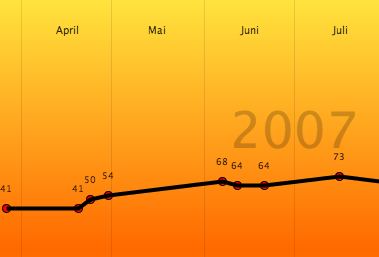
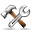

Trainer is a tool for measuring progress for strength training. It will keep you motivated and help you reach your goals by showing you progress through graphical progress chart along with your comments.
A collection of exercises is already available for you to download. Click on the "Online" button to open up the online exercise browser. Download your exercise by checking the checkbox in the first column of your desired exercise and then click "Install".
Create a new workout by clicking on the "Workout" button in the toolbar. Then click on the "Add set" button and see that a new empty set was added in the "Set" window (below the progress charts). Click on the "Select exercise" button and select your exercise. Enter your weight and repetitions and an optional comments for that set. If you want to register more sets with the same exercise, just repeat this method. All sets will be added below the previous one.
 The individual progress charts will show your maximum weight used on the day of exercise. If you want to see the progress chart for another muscle, click on the body part icon (e.g Shoulder) and then click on the tab for the specified muscle.
In addition to measuring strength increases, you can also see how your body's appearance changes to become slimmer or bigger - depending on your personal goals. If you have a weight with fat values you can also register that here.
If you perform aerobic exercises like running, biking, swimming or walking you can also register that in Trainer.
 It's easy to create your own exercise. Start by clicking the "Exercises" button in the toolbar to open up the exercise editor. Find the body part you want to add an exercises for, then expand it by double clicking on it. One or more muscles will appear. Select one and click the "Add exercise" button that is now clickable. Enter the name of the exercise and add description of the exercise. If you like you can also add an image by dropping an JPG or PNG file onto the square box that says "Drag and image here".